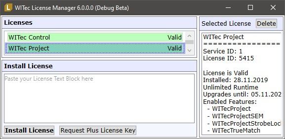
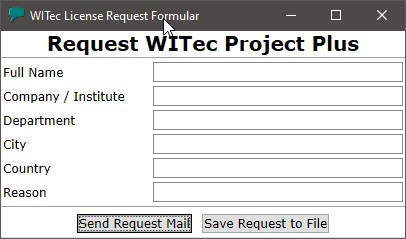

|
许可证管理器
|
许可证管理器显示当前已安装的许可证，并允许您安装或删除许可证：

许可证列表
单击许可证查看许可证详细信息。
删除
删除当前选定的许可证。
请仅在许可证不再有效或您确实知道自己在做什么时才删除许可证！
安装许可证
将您的许可证文本从 Windows 剪贴板复制到黑色钥匙符号旁边的白色区域（使用 Ctrl-V 快捷键或通过右键上下文菜单 -> 粘贴）。然后按"安装许可证"按钮。
申请 WITec Project 或 Plus 许可证密钥：
这将打开一个申请窗口，允许您向 WITec 发送申请。
在发送 WITec Project 密钥申请之前，请检查您的公司/部门是否已有许可证密钥。通常，WITec Project 许可证随 WITec 系统一起提供。
在发送 WITec Project Plus 密钥申请之前，请确保 WITec 已收到许可证订单。该申请用于为 WITec Project Plus 创建绑定到计算机的许可证密钥。

请至少输入您的全名和公司/大学，如适用也请填写其他字段。
发送申请电子邮件：
如果您已安装并正确配置了电子邮件客户端，可以按此按钮自动创建包含申请文本的新邮件。
如果该计算机上没有电子邮件客户端，请将申请保存到文件，然后将此文件带到有电子邮件客户端的计算机上，将其内容发送至 key@witec.de
保存申请至文件：
将申请电子邮件文本保存到硬盘上的文件中。